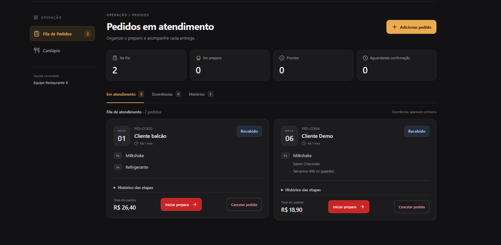
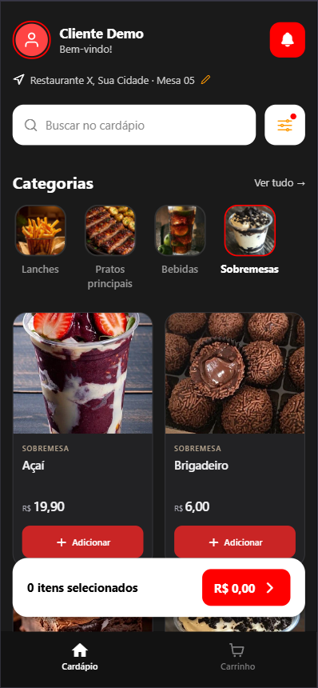

Aplicativo do cliente
Cardápio, personalizações, carrinho e acompanhamento completo do pedido no celular.
Uma simulação integrada que conecta o cardápio do cliente à operação da equipe, com atualizações em tempo real em cada etapa.


Explore o fluxo como cliente no aplicativo e acompanhe cada pedido pelo painel da equipe.
Cardápio, personalizações, carrinho e acompanhamento completo do pedido no celular.
Fila operacional, ocorrências, pedidos manuais e gestão do cardápio em uma interface direta.
Status, cancelamentos e confirmações sincronizados entre cliente, equipe e banco de dados.
Abra o painel no navegador ou instale a versão Android para simular a jornada do cliente.